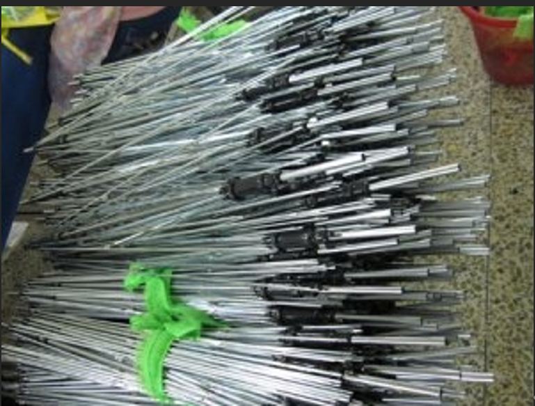
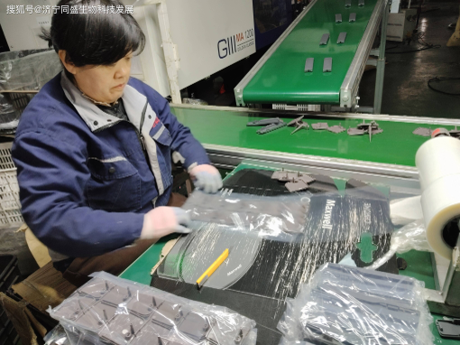
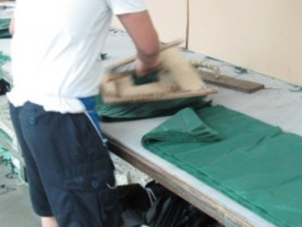

Exercise 4: Material and Tool
View your assignment
Complete Analysis of Umbrella Materials and Manufacturing Processes
I. Umbrella Components Corresponding to the Three Material Categories
Metals (Aluminum Alloy / Low-Carbon Steel): Central shaft (umbrella pole), main umbrella ribs, joint rivets, and opening springs
Plastics (ABS Engineering Plastic): Umbrella handle, opening button, umbrella top bead, and rib connecting sleeves
Composite Materials (Coated Composite Textile Fabric): Umbrella canopy (polyester base fabric with PU / black glue waterproof and sun-proof coating, a high-molecular composite fabric)
II. Production Process of Metal Components (Aluminum Alloy Ribs + Steel Central Shaft)
1. Raw Materials
Mainstream materials: 6061/7075 aluminum alloy profiles and low-carbon steel strips, featuring light weight, bending resistance and rust resistance.
2. Complete Processing Flow
Extrusion Forming
Aluminum ingots are melted at high temperature and extruded through dies to form hollow flat aluminum profiles (blank materials for umbrella ribs); steel strips are cold-bent into hollow round pipes (central umbrella shafts) via multiple sets of rollers.
Fixed-Length Cutting
CNC cutting machines precisely cut umbrella ribs and central shaft pipes according to umbrella model dimensions with a tolerance of ±0.1mm.
Grooving, Punching and Stamping Forming
Hinge grooves and rivet holes are stamped at both ends of umbrella ribs; segmented holes are punched on the central shaft for fixing springs and limit buckles.
Surface Anti-Corrosion Treatment
Aluminum alloy: Anodization is adopted to form a 10~15μm oxide film for rain corrosion resistance and wear resistance.
Steel central shaft: Electrophoretic painting is applied to form a rust-proof paint layer and prevent rusting during long-term rain exposure.
Riveting and Frame Assembly
Fine metal rivets connect long and short umbrella ribs to form a foldable hinge structure; steel springs are installed inside the central shaft to realize automatic opening and rebounding of the umbrella.
Mechanical Quality Inspection
Single-rib tensile tests and 5,000-time opening and closing fatigue tests are conducted. Products are qualified only if no deformation or fracture occurs.

III. Injection Molding Process of Plastic Components (ABS Handles and Buttons)
1. Raw Materials
ABS particles (featuring impact resistance, low-temperature resistance, crack resistance and excellent outdoor durability). The outer layer of some handles is coated with soft EVA foamed plastic.
2. Complete Injection Molding Procedure
Raw Material Drying
ABS particles are dried at 80℃ for 4 hours to remove moisture and avoid bubble generation in finished products.
Melting and Injection
The barrel of the injection molding machine is heated to 220~260℃ to melt plastic into fluid state, which is injected into the metal mold cavity under high pressure of 80~120MPa.
Constant-Temperature Cooling and Shaping
The mold temperature is controlled at 45~65℃, and cooling lasts for 30~45 seconds to cure and shape plastic into umbrella handles, buttons and umbrella tops.
Demolding and Deburring
Finished products are ejected pneumatically, and mold closing burrs are trimmed manually or by manipulators.
Post-Treatment
Polishing and logo screen printing are performed. Some curved handles undergo secondary hot bending shaping to improve grip comfort.

IV. Manufacturing Process of Composite Material (Canopy Coated Composite Fabric)
1. Material Composition (Typical Three-Layer Composite Structure)
Base layer: 190T/210T polyester textile fabric (structural skeleton layer); intermediate functional layer: black glue / silver glue sun-shading and light-blocking layer; surface layer: PU nano waterproof coating. It is a textile composite material combined with fibers and high-molecular coatings.
2. Coating and Composite Production Flow
Base Fabric Pre-Treatment
Polyester grey fabric is cleaned by plasma to improve coating adhesion and prevent coating peeling after repeated folding.
Multi-Layer Coating and Drying (Four-Coating and Four-Drying Process)
① Bottom layer: Water-based PU waterproof adhesive, dried at 100℃;
② Middle layer: Light-blocking black glue (titanium dioxide + polyurethane), dried in sections at 120~140℃ to achieve UPF50+ ultraviolet resistance;
③ Surface layer: Nano hydrophobic coating with a water droplet contact angle of over 110°, realizing lotus-effect waterproof performance for automatic rainwater sliding and anti-penetration.
Hot-Press Composite Shaping
Hot roller pressing is performed at 80~100℃ to tightly bond multi-layer coatings with polyester fabric, enhancing peeling strength and preventing cracking after folding.
Fabric Finishing
The fabric is stretched, shaped, cooled and rolled up. Finished fabrics are tested for hydrostatic water resistance, tearing strength and color fastness before delivery.
Canopy Cutting and Sewing
Computer cutting machines cut full-roll composite fabric into 8 triangular canopy pieces. Sewing machines splice the canopy pieces with edge locking to prevent thread loosening, and the canopy is sewn and fixed to metal umbrella ribs.
